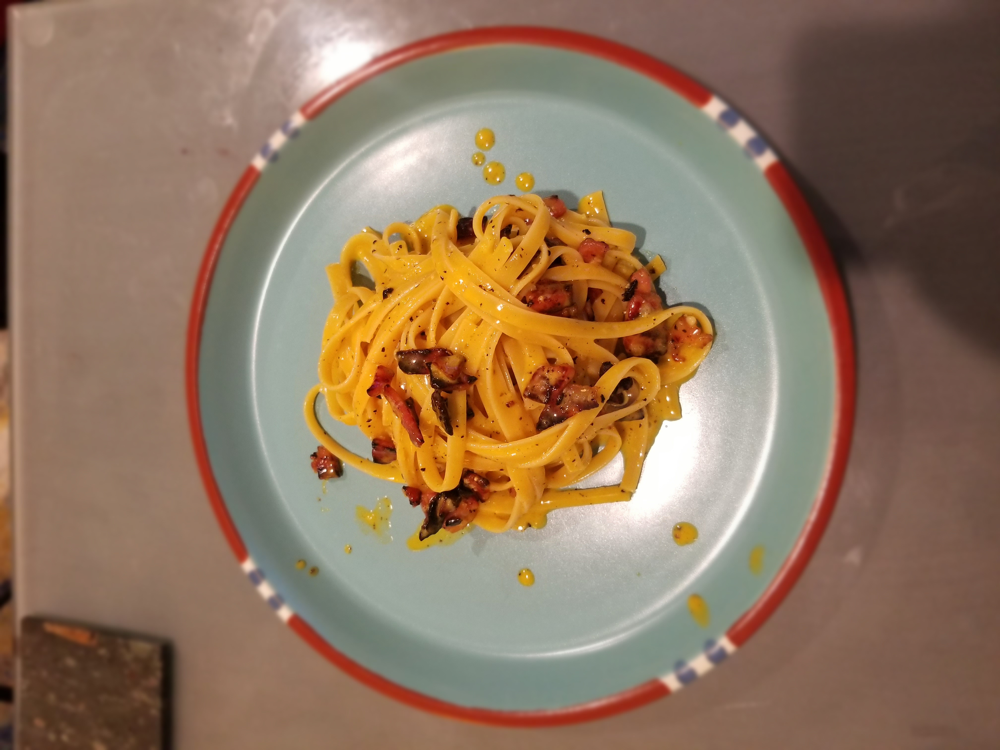

Carbonara Recipe

Description
Carbonara is one of the four classic Roman pasta dishes (Cacio e pepe, alla gricia, carbonara, and alla matriciana). This is a elegant and simple dish, which means it is very hard to get right.
I recommend reading through this method a few times before trying it yourself. We will be using a method to ever so slightly cook the egg before mixing in with the pasta.
Tools
- Mixing bowl big enough to fit over your pot
- Tongs
Ingredients
- ~1-cup freshly grated Pecorino Romano cheese
- 1 serving of guanciale, pancetta, or bacon. Any of the three will work
- 3 eggs (2 yolks and 1 full egg)
- ~200g of pasta - linguine or any long pasta will work
Preparation
- Start by filling a pot with water and putting it on medium heat. Make sure your mixing bowl can sit on top of the pot without touching the water. We do not want to boil the pasta water. We want our pasta water to be just under a boil. Lightly
salt the water, the meat will add a lot of salt to this dish.
- Chop the meat into bitesize pieces and cook until just before crispy. Set off to the side
- While water is coming to a boil, add 2 egg yolks and one full egg into the large mxing bowl and whip together.
- When the water reaches a near boil, add your pasta.
- While the pasta cooks, place the mixing bowl on top of your pan. Stir the eggs constantly, adding in your cheese. Keep some extra cheese off to the side for later. Stir until you have a smooth mixure. Add the meat to the egg mix and place off to the side
- Once the pasta is al dente, remove with tongs and add to the egg mixture. Whip the egg, meat, and pasta together vigorously. Balance pasta water and cheese as needed to get a creamy sauce.
- Plate immediately and top with cracked pepper and more cheese. Enjoy!